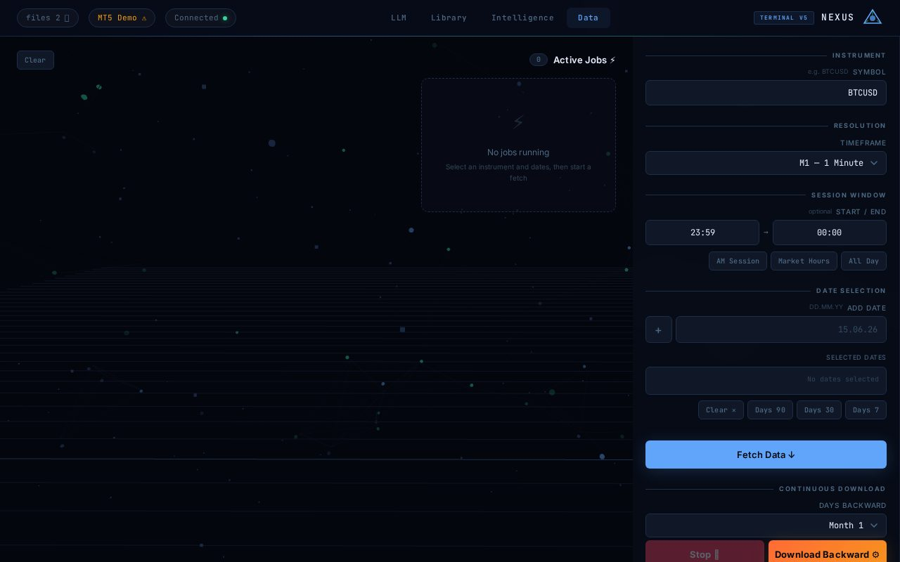

About this project
Downloads raw MT5 market data per symbol/timeframe/date for RL agent training, with a synthetic demo mode when MT5 is unavailable and optional LLM auto-analysis via OpenRouter.

Project facts
CategoryTrading & Fintech
Primary languagePython
Lines of code3,165
Files15
Statusstable
Est. market value$5,000
Source pathprojects/mt5-fetcher-main
Stack
PythonFastAPIMetaTrader 5PWA
Server-side project — no browser preview
This project runs as a backend service, bot or desktop workflow. Explore the full source code below, or run it locally with Docker.